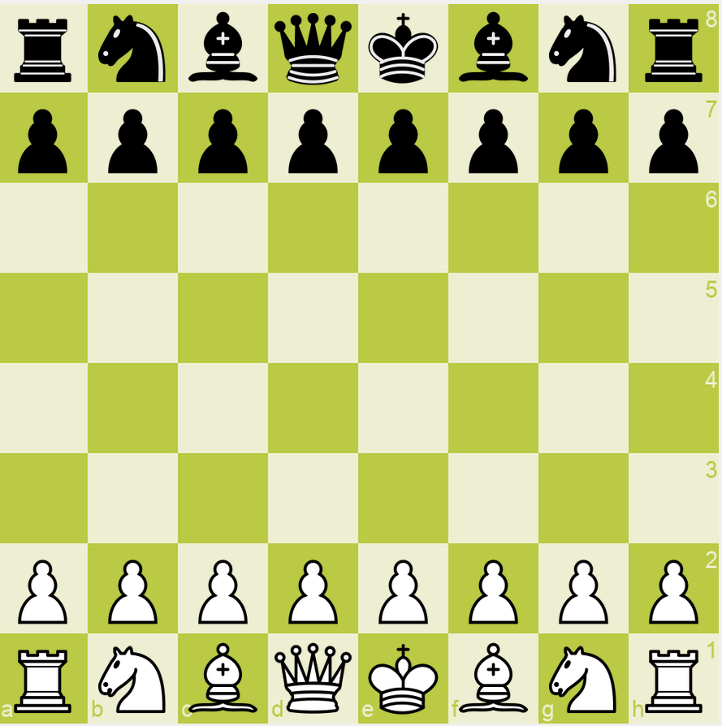
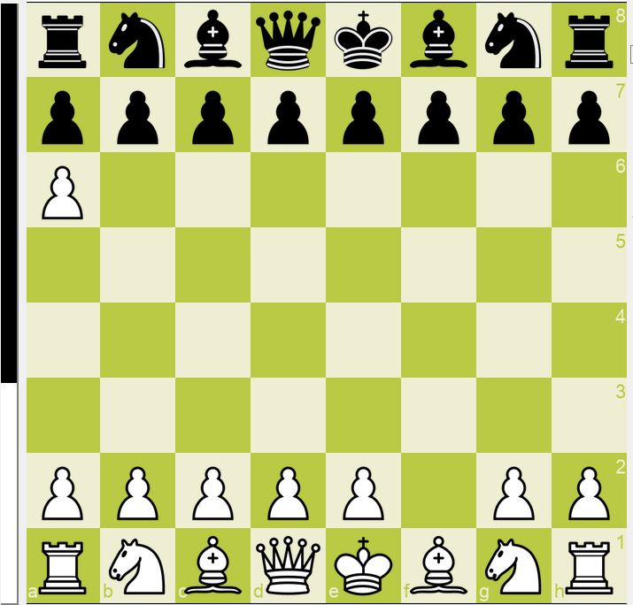

Introduction
Cusp Chess is a decisive chess variant based on Freestyle Player-Balancing (FSPB). This variant aims to eliminate draws. By giving a color an edge, the color must win and draw means loss for it. Then all other standard chess rules apply.
The Idea
Only the pie rule is not fair enough for decisive games, because of opening preparation and forceful setup. If there are only a few ways to cut a pie, it is not fair for the first player. If there are too many ways to cut a pie, it is not fair for the second player. It is impossible to determine a perfect number of the options. And It is always unfair to force players to set up fight-starting position candidates, especially when they are uncomfortable about the choices available. The framework FSPB adds a safe move phase before the pie rule to fix the problem. There are only a few choices at each move, but there can be many moves before a player sets up a fight-starting position. Because of the expontional growth, it is impossible to prepare for all positions. Because palyers will only set up fight-starting positions when they want to, Cusp Chess is fair for both of them.
Rules
Board Setup
A standard 8×8 chessboard.
Standard starting position.
Standard chess pieces for each player.

Gameplay Overview
Cusp Chess usually has three phases: Safe Move Phase, Decision Phase and Fight Phase. The first two phases are not to restrict players’ moves. On the contrary, they are determined by players’ moves in games. When a player makes a safe move, the game is in the Safe Move Phase. When a player decides to set up a fight-starting position, the game goes into the Decision Phase. After two colors are assigned to two players, the game enters the Fight Phase.
Safe Move Phase
When a player makes a legal safe move, they need to specify whether they want to set up a fight-starting position or not, because a legal safe move is also a legal setup move.
If a player doesn’t want to set up a fight-starting position now, they need to make an optimal safe move to make the position balanced: -1 < position score < 1. If a player didn’t make an optimal safe move and didn’t set up a fight starting position, it is possible their opponent will choose the advantaged color directly because now the position is unbalanced and the advantaged color can win.
If a player is checked, the player can either resolve the check, or make a setup move, or choose a must-win color directly.
It is possible that no Safe Move Phase in a game. At the first move, a tentative White player can choose a color directly or set up a fight-starting position and let his/her opponent to choose a color.
Decision Phase
A player can choose a color directly on their turn, if they didn’t make a move. But they must choose the must-win color. Then their opponent is assigned to the opposite color automatically. Then the game goes into Fight Phase.
A player can set up a fight-starting position by a legal setup move on their turn. When a player sets up a fight-starting position, the color-to-move and must-win color must also be specified. Then, his/her opponent must choose a color, which can be the must-win color or the opposite color. After a player chose a color, the opponent’s color is fixed too. The game goes into Fight Phase.
Fight Phase
Now two colors are set. The two players must find the best moves. All standard chess rules apply, except draw means loss for the must-win color.
Score-Line Visulization in Three Phases
300 hundred games were played between Stockfish 17.1 and Stockfish 17. If a game’s result was clear, the game was stop to reduce test time. The score lines in the Safe Move and Decision Phases are shown in Figure 6. The score lines are aligned as shown in Figure 7.


Aligned score lines of the Safe Move and Decision Phases with following 27 moves in the Fight Phase are shown in Figure 8 (only Stockfish 17.1’s score lines in the Fight Phase). Aligned score lines of the 300 hundred games are shown in Figure 9(only Stockfish 17.1’s score lines in the Fight Phase).


Legal Setup Move
Legal setup move includes legal safe move and One-Free move. One-Free move is illegal in standard chess. It is designed to create more good fight-starting positions in Cusp Chess by relocating at most one piece. There are two modes for One-Free move in Cusp Chess: Human-Level-Mode and Engine-Test-Mode.
Human-Level-Mode Setup Rules
• A player can make no move.
• A player can make an illegal move by relocating one of their own pawns onto a vacant square in the opponent’s half board, except the last rank. No illegal pawn promotion.
• A player can remove one piece from the board, including his/her opponent’s piece, except the two kings.
• A player can’t move the opponent’s pieces.
• If a color sets up a fight-starting position to let the opponent choose a color, the opposite color automatically becomes the side to move in Fight Phase. For example, a tentative White player set up a fight-starting position to let tentative Black player choose a color. In the fight-starting position, the side to move must be Black.
• If a player chooses a must-win color directly, the side to move in the position doesn’t change. For example, if a tentative White player chose a color directly, in the fight starting position the White side is to move.
• All moves in Human-Level-Mode can’t break the forbidden rules.
• Human-Level-Mode is enough for human players and engines. Rules of Human-Level-Mode can be refined if necessary. The goal is to maximize the good fight starting position options for most safe positions while minimize the number of legal setup move options.
Engine-Test-Mode Setup Rules
• All moves in Human-Level-Mode in 6.3.
• A player can relocate a piece of any color to any square (either empty or occupied).
• A bishop can’t be relocated to the opposite color square.
• A player can set the side to move freely when setting up a fight-starting position.
• A pawn can be promoted when relocated directly to the last rank.
• All moves in Engine-Test-Mode can’t break the forbidden rules.
• Engine-Test-Mode can create much more good fight-starting positions, compared to Human-Level-Mode. It is not suitable for human players.
Forbidden Setup Rules
• Neither color can be checkmated.
• The side to move can't be checking the opposite color.
• Both kings can not be removed.
• Illegal castling is not allowed.
• Moving more than one piece is not allowed, except a legal castling.
Notation Examples
All moves are recorded using standard Algebraic Notation (SAN), except in Decision Phase. The notation system is designed to be redundant on purpose. It is clear and intuitive.
All notations in Decision Phase start with “CC”, which means “Cusp Chess”. The notation in the Decision Phase has two lines at most. If a player chooses a color directly, it has only one line.
There are four different notations in the Decision Phase:
• Move a piece. For example, in the notation “CC {WS c2h6 BWBN} {0.94}”, “WS c2h6” means tentative White player set up a fight-starting position by moving a piece from c2 to h6. “BW” means the Black color must win. “BN” means the Black color moves next. {0.94} is the position score for Black. That is why Black must win in the fight-starting position.
• Remove a piece. For example, in the notation “CC {BS g2xx BWWN} {-1.02}”, “BS g2xx” means tentative White player set up a fight-starting position by removing a piece at g2 from the chess board. “BW” means the Black color must win, and “WN” means the White moves next. The position score of White is -1.02. The position score for Black is 1.02. So it is reasonable to set the condition that Black must win.
• Choose a color when the opponent set up a fight-starting Position. For example, in the notation “CC {BCWD} {0.89}”, After tentative White player set up a fight-starting Position, “BCW” means tentative Black player chose White color. “WD” means that draw means win for White. The tentative Black player now is the White player, and draw is enough for him/her.
• Choose a color directly. For example, in the notation “CC {BC none BWBN} {1.06}”, “BC” means tentative Black player chose a color directly. "none" means the player can't make a move when choosing a color directly. “BW” means the Black color must win. Here we know the tentative Black player can only choose Black color. His/her opponent will be the White. “BN” means the Black color moves next. Here tentative Black player think the win rate is over 50% because the score is 1.06, so they chose Black directly and try to win with the color.Terminology
Safe position
If win rates of both color of a position are below 50%, the position is a safe position. The previous player is safe, because their opponent can’t choose the must-win color directly to win easily. Based on popular chess engines, the score of a safe position ranges from -1 to +1. The relation between safe position and optimal setup position are shown in Figure 2.
Fight-starting position
It is the starting position in the Fight Phase. There is only one fight starting position in a game. A player can set up a fight starting position by a legal setup move. If a player chooses the must-win color directly in a position, the position is the fight starting position. Each player has the right to set up a fight-starting position. However, this right can only be exercised once per game total. It is tentative White player’s responsibility to set it up. if no one did it, draw means loss for the tentative White player.
Cusp position or optimal setup position
A cusp position’s score is either around -1 or +1. They are optimal setup positions for fight-starting positions. The name of “cusp position” is from the evaluation function of typical chess engines as shown in Figure 3 and Figure 4.
Legal move
In Cusp Chess, there are three types of legal moves for three phases respectively: legal safe moves, legal setup moves, and legal fight moves. The legal safe move and legal fight move are the same as legal moves in standard chess. Legal setup move includes legal safe move and One-Free move. All the moves in Safe Move and Decision Phases are shown in Figure 5.
Optimal safe move
They are legal safe moves that can create safe positions in the Safe Move Phase. Usually there are multiple optimal safe move options for each position.
Setup move
A legal move in Decision Phase is a set up move. It is used to set up a fight-starting position.
Optimal setup move
An optimal setup move can create an optimal setup position.
One-Free move
All moves that are illegal in standard chess designed to set up fight starting positions are One-Free move. They are legal setup moves but not legal safe moves. There are two modes of One-Free move: Human-Level-Mode and Engine-Test-Mode. Human-level-Mode can create sufficient good fight-starting positions while won’t overwhelm human players. Engine-Test-Mode can create much more good fight-starting positions, but not suitable for human players.
Direct-choice move
A player can choose a color directly after their opponent’s safe move. But they can’t make a move before the selection and can only choose the must-win color. They also can’t set the side to move. Direct-choice move can be seen as a special setup move in the Decision Phase.
A Good Fight-Starting Position Example
CC {WS f2a6 BWBN} {1.03}. Tentative White player set up a fight-starting position by relocating the f-pawn onto a6. Now the position score is 1.03 for Black. Black must win and Black side to move.

Test Result
Win rates of Stockfish 17.1 when matched against each of five different versions in 600 games are shown in Figure , 10 seconds per move. We can see Stockfish 17.1 is also better than older versions in Cusp Chess.

Reference
For more information about Freestyle Player-Balancing; check my 26-page preprint paper. Freestyle Player-Balancing: A Novel Flexible Framework for Addressing Game Balance and Opening Memorization in Decisive, Two-Player, Perfect-Information, Turn-Based Games. link, https://zenodo.org/records/21687566
Cusp Chess Open Source Project on GitHub Cusp Chess Open Source Project.
Cusp Xiangqi Open Source Project on GitHub Cusp Xiangqi Open Source Project.
Future Development
One day, there will be Cusp Chess tournaments.